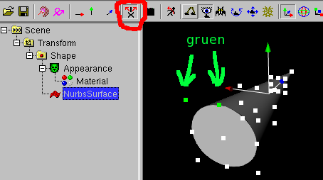
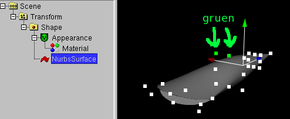
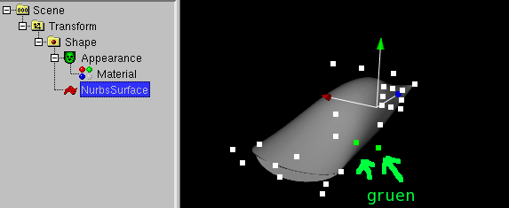
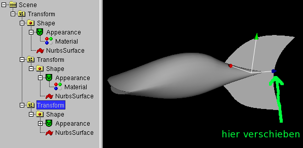
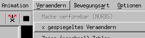
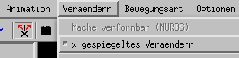

Bau eines Fisches (nicht leicht)
Erst einmal ein paar Informationen zum lesen
Auf manchen Systemen (Linux KDE/Gnome und SGI IRIX 4dwm) gibt es ein eigenes
Programmicon fuer "dune4kids", es sieht dann irgendwie so aus:


Auf Systemen wie Micro$oft Windows oder MacOSX ist aber nur ein
(anderes) Programmicon vorhanden:


Normalerweise startet das Programm dieses Icons beim ersten Mal
in der englischen Vollversion, in der Regel mit sehr vielen Icons
und zu vielen Menues.

Es muss dann zuerst einmal auf Deutsch und dann auf dune4kids umgestellt
werden.
Man muss
hier draufklicken um auf die richtige Version umschalten zu
können.

Was tun, wenn das Programm abstürtzt ?
Mit etwas Glück kann man den letzten Stand neu laden, wenn man bei
den aktuellen Dateien eine neue ".dune_crash" Datei findet.

Navigation
Navigation bedeutet das Herumbewegen im 3D-Modell.
Das ist wichtig, denn es kann sehr leicht passieren, dass man vor oder in
sein Werkstueck gerät und deswegen ueberhaupt nichts mehr sieht.
Wenn man nichts mehr sieht, gibt es zwei Vorgehensweisen, die man meistens
gemeinsam anwendet:
- Man geht nach hinten
Vorwärts und Rueckwärts geht man, indem man gemeinsam die linke
Maustaste und die "Shift"-Taste (deutsche Tastatur:
"Leerer-Pfeil-hoch-Taste")
gedrückt hält und dabei die Maus nach oben oder unten
verschiebt.
In der Einstellung "Examine" (wenn das Icon  gedrückt
ist) funktioniert das auch mit der mittleren Taste einer 3-Tasten-Maus.
Bei einer Maus mit Scrollrad muss man das mittlere Scrollrad
drücken.
gedrückt
ist) funktioniert das auch mit der mittleren Taste einer 3-Tasten-Maus.
Bei einer Maus mit Scrollrad muss man das mittlere Scrollrad
drücken.
- Man dreht die 3D-Welt
Drückt man gemeinsam die linke Maustaste und die "Control"-Taste
("strg" auf der deutschen Tastatur) dann dreht sich die ganze
3D-Welt vor einem, wenn man die Maus bewegt. Das wird normalerweise
dazu benutzt, um ein neu erzeugtes Objekt von allen Seiten betrachten
zu koennen, hilft aber auch dann, wenn man im Nichts steht.
Man muss aber daran denken, dass der Inhalt nicht nur hinter einem
versteckt sein kann, sondern auch oben, unten, links oder rechts.
Das bedeutet, dass man oft ganz schön "kurbeln" muss, bis man
sein Objekt wiederfindet.
Zusätzlich gibt es noch die Möglichkeit, die linke Maustaste,
die "Shift"-Taste und die "Control"-Taste gleichzeitig gedrückt
zu halten (oder das Icon  benutzen).
Damit kann man sich in Richtung der Bildschirmfläche, also nach
oben, unten, links oder rechts bewegen.
benutzen).
Damit kann man sich in Richtung der Bildschirmfläche, also nach
oben, unten, links oder rechts bewegen.
Nachdem man sein Objekt wieder gefunden hat, sollte man wieder das
"Examine"-Icon drücken, damit man wieder
wie gewohnt arbeiten kann.
Icons für Veränderungen
Um zu zeigen, wie man Dinge verändern kann, wird einfach mal ein
Quader erzeugt.

Icons, um ganze Objekte zu verändern:
- Verschieben:


- Drehen:


- Vergrössern/verkleinern:


- Gleichartig vergrössern/verkleinern:


- Drehpunkt verschieben:


Mit weissen Kästchen kann man Objekte selber verändern.
Mit den einzelnen Pfeilicons  kann man die Richtung
steuern.
kann man die Richtung
steuern.
Wird zum Beispiel nur der grüne Pfeil hereingedrückt,
 kann bei
kann bei

ein Kästchen nur in Richtung des grüne Pfeils geschoben werden.
 .
.
Genau wie man Pfeile auch an den Schäften statt an den Spitzen
packen kann, um in einer Ebene verschieben zu können, kann man
auch zwei Pfeile gleichzeitig hereingedrücken  ,
um ein Kästchen in einer Ebene verschieben zu können.
,
um ein Kästchen in einer Ebene verschieben zu können.
Jetzt geht es los: Bau einer Fisches (nicht leicht)
Die folgende Beschreibung muss man nicht sklavisch befolgen, aber (zumindest
beim ersten Versuch) halbwegs in der Spur bleiben.
Ein Fisch wird aus mehreren Teilen hergestellt: einem Rumpf mit Maul,
mehreren Flossen und zwei Augen.
Rumpf
Begonnen wird mit dem Rumpf. Der Rumpf besteht aus einem mathematischen
Kegel (kein Kegel wie beim Kegeln, sondern einem Körper, der so
ählich aussieht, wie eine ägyptische Pyramide, nur unten
mit einem Kreis statt einem Viereck. Ein Hütchen beim Fang-den-Hut
ist so ein mathematischer Kegel).
Dazu benutzt man
Neu > Kegel

Wenn "Cone" (englisch für "Kegel") angewählt ist, kann mit dem
Verschieben der weissen Kästchen (Kästchen anklicken, dabei die
Maustaste gedrückt halten und die Maus verschieben) die Höhe und
die Breite des Kegels verändern.

Später wird der untere Kreis des Kegels zusammengefaltet und bildet
das Maul. Viele Fische haben ein eher kleines Maul, deswegen sollte die
Breite des Kegels eher klein sein. Ob es später ein dünner oder
ein dicker Fisch wird, wird damit noch
nicht festgelegt. Das wird erst später entschieden.
Damit man den unteren Kreis des Kegels zusammenfalten kann, muss man
den Kegel verformen können. Deswegen ist der nächste Befehl
(nachdem im linken Fenster "Cone" angewählt wurde).
Veraendern -> mache verformbar (NURBS)

Im nächsten Fenster kann man einfach "OK" anklicken.

Obwohl sich am Körper nichts verändert hat, haben sich die
Kästchen verändert. Zieht man an einem Kästchen, kann
man den Körper viel gezielter verändern (wenn man jetzt an
einem Kästchen gezogen hat (nur dann), sollte man
Bearbeiten -> Rueckgaengig machen benutzen, das Kästchen wandert
dann wieder zurück).
Beim white_dune Programm sind bestimmte Richtungen bevorzugt. Man kann
zum Beispiel Körper mit dem Joystick steuern, wenn der Körper
richtig liegt. Es gibt auch einen dazu passenden
Bewegungsart -> Aufstehen Befehl.
Dummerweise passt der Fischrumpf noch nicht so richtig dazu, deswegen muss
"NurbsSurface" im linken Fenster ausgewält werden, damit man
Verändern -> Vertauschen -> y (gruen) und z(blau)
benutzen kann.

Jetzt sollte man das Zwischenergebnis in eine Datei abspeichern.
Beendet man das
Programm (oder schaltet man den Strom ab) ist alles verloren, wenn man
nicht in eine Datei abgespeichert hat. Zum Abspeichern benutzt man
Datei -> Speichern.
Dabei öffnet sich ein Fenster, an
dessen unteren Rand man etwas eintippen kann. Am besten ist es, wenn
man das Wort Fisch, dann einen Unterstrich (dieses Zeichen: _), dann
seinen Vornamen, dann einen Unterstrich (_), dann seinen Nachnamen,
dann einen Unterstrich (_) und dann sein Alter eintippt.
Also wenn man
"Max Mustermann" heisst und 11 Jahre alt ist: Fisch_Max_Mustermann_11
Damit weiss man beim Zusammenbauen des Films, dass die Datei ein 3D-Modell
eines Fischs enthält und dass man "Max Mustermann, 11 Jahre" zum
Fisch im Abspann schreiben muss.
Auch später (und vor allem am Schluss !) sollte man immer mal
wieder Datei -> Speichern benutzen, damit nichts verloren
geht.
Jetzt sollte das "Examine"-Icon hineingedrückt
sein. Ausserdem sollte das Icon  für
"X gespiegeltes Verändern" hineingedrückt sein (ändert man
ggf. mit Verändern -> "X gespiegeltes Verändern").
für
"X gespiegeltes Verändern" hineingedrückt sein (ändert man
ggf. mit Verändern -> "X gespiegeltes Verändern").
Man dreht sich jetzt sein Objekt so hin, dass man mit dem Klicken der
mittleren Maustaste (meistens: draufklicken auf das mittlere Mausrad)
zwei Kästchen grün markieren kann. Die richtigen
Kästchen sind das obere (Richtung grüner Pfeil) Kästchen
am "Fischmaul" Kreis und das Kästchen daneben.

Jetzt braucht man eine ruhige Hand, um mit der rechten Maustaste eines
der grünen Kästchen zu treffen, die Maustaste gedrückt
zu halten und die Maus zu verschieben. Dabei bewegen sich beide
grünen Kästchen und das dazu in Richtung x (roter Pfeil)
gespiegelte Kästchen. Es entsteht der Oberkiefer des Fischs.

Genauso entsteht der Unterkiefer. Man klickt erst mal ins Leere, um
die bisherige Markierung zu beenden. Dann markiert man das untere
Kästchen (Richtung grüner Pfeil) Kästchen
am "Fischmaul" Kreis und das Kästchen daneben.

Mit dem Ziehen am ässeren Kästchen wird der Unterkiefer
herausgezogen.

Jetzt kann man die Dicke des Fischs festlegen. Dazu geht man genau
wie bei Unter- und Oberkiefer vor, es werden dabei nur Kästchen
in der Mitte des Fischs markiert

und in die Höhe gezogen.

Genauso geht man für die Unterseite des Fischs vor.


Man kann auch noch an anderen Kästchen (am besten an mehreren gleichzeitig)
ziehen und schauen, ob der
Fisch dadurch schöner wird (gegebenenfalls die Änderungen
(mit Bearbeiten ->) Rueckgaengig machen) oder zum Beispiel mit dem
Vergrössern/Verkleinern-Icon einen
flachgeklopften Fisch (wie eine Scholle oder ein Rochen) basteln
(danach wieder auf das Verschieben-Icon
zurückstellen).
Flossen
Als nächstes baut man die Schwanzflosse. Damit man später den
ganzen Fisch bewegen kann (und nicht nur Rumpf und Flossen getrennt)
muss vor dem nächsten Befehl im linken Fenster der "Transform"-Befehl
des Rumpfs (der oberste Transform im linken Fenster) angewählt werden.

Dann benutzt man
Neu -> Flaeche -> y (grün) und z (blau))
. Danach wird man nach der Grösse der Fläche gefragt, dabei
kann man einfach OK klicken.

Danach muss man die Flosse mit der blauen Pfeilspitze an den richtigen
Ort schieben.

Die Form der Flosse wird durch Verschieben der weissen Kästchen
festgelegt.

Für Rüchken- und Bauchflosse wird ein kleiner Trick benutzt:
sie entstehen aus einer Kopie der Schwanzflosse. Dazu muss der
"Transform"-Befehl der Schwanzflosse ausgewält werden

und dann
Bearbeiten -> Kopieren
sofort gefolgt von
Bearbeiten -> Gespiegelt einfuegen -> x (rot)
benutzt werden.

Auch wenn es auf den ersten Blick so aussieht, als hätte sich nichts
verändert, ist die Schwanzflosse jetzt zweimal vorhanden. Da die
zweite Kopie an der gleichen Stelle sitzt wie die erste, sieht man das
aber nur an dem linken Fenster. Jetzt muss man die zweite Kopie in die
Mitte des Fisches schieben (mit dem blauen Pfeilende)

und kann dann mit dem Verschieben der Kästchen die Form entsprechend
verändern.

Augen
Als nächstes werden die Augen gebaut.
Zuerst wird das linke Fenster aufgerämt. Man klickt die + Icons
der Transforms der bisher gebauten Flossen an

Dann muss wieder der "Transform"-Knoten des Rumpfs (der oberste Transform
im linken Fenster) angewählt werden.

Mit
Neu > Kugel
wird der äussere Teil
des Auges erstellt.

Allerdings ist dieser Teil noch viel zu gross. Mit den weissen Kästchen
macht man es kleiner und mit den Pfeilen verschiebt man es an die richtige
Stelle.

Jetzt ist der Augapfel an der Reihe. Dazu muss man vorher den Transform des
äusseren Teil des Auges anwählen.

Es wird wieder
Neu > Kugel
benutzt

Und wieder ist der Augapfel zu gross. Auch er wird mit den weissen
Kästchen kleiner gemacht und mit den Pfeilen verschoben.
(wenn der Augapfel im Auge verschwindet, ist das nicht weiter tragisch:
man muss nur im linken Fenster das richtige "Sphere" (englisch für
Kugel)-Icon anklicken und sieht dann wieder Kästchen und Pfeile, obwohl
der Augapfel selber gar nicht sichtbar ist).

Als nächstes kommt Farbe ins Spiel. Dafür muss man im linken Fenster
das "Material"-Icon anwühlen (falls man keinen sieht: er kann
sich innerhalb eines "Appearance"-Icons verstecken, man muss dann das
"+"-Icon von Appearance anklicken).
Jetzt wird
Veraendern -> Farbe (braucht Material) -> Normal
benutzt. Es öffnet sich ein Farbfenster, bei dem man
eine Farbe und hell/dunkel auswählen kann.

Nachdem man "OK" angeklickt hat, benutzt man
Veraendern -> Farbe (braucht Material) -> Glaenzen.
Damit das gut wirkt, muss man eine helle Farbe auswählen.

Wenn man mag, kann man über
Veraendern -> mache verformbar (NURBS)
die Form der Augen und des Augapfels verändern.
Nachdem das Auge fertig ist, muss man es gespiegelt kopieren.
Dazu muss man den Transform des äusseren Teil des Auges anwählen.

Dann muss man
Bearbeiten -> Kopieren
und sofort danach
Bearbeiten -> Gespiegelt einfuegen -> x (rot)
genutzen. Aus einem Auge sind zwei geworden.

Ein tieferes Maul
Ein kleines Problem wurde vergessen und muss noch repariert werden:
Unser Fisch hat noch das Maul einer Sockenpuppe (mit einer geraden Kante
anstelle eines tiefen Schlunds).
Damit das Maul etwas natütrlicher aussieht muss man den Punkt in
der Mitte des Mauls nach hinten schieben.

Das kann man erst machen, nachdem man die Augen gebastelt hat, denn sonst
sieht man die Kugeln, aus denen die Augen gemacht sind, wenn der Fisch das
Maul aufreisst.

Weg mit dem Grauschleier
Im Prinzip ist der Fisch geputzt.
Als nächstes kann man die Farben von Rumpf und Flossen verändern.
Dazu geht man vor wie gerade beim Auge, man muss im linken Fenster
das "Material" Icon des Körpers anklicken und dann
Veraendern -> Farbe (braucht Material) -> Normal / Gluehen / Glaenzen
benutzen. Bei "Glühen" wird eine Art Leuchtfarbe benutzt, das macht nur
mit dunklen Farben Sinn, sonst ist der Fisch so weiss/hell, dass die
Rundungen nicht mehr zu sehen sind.

Animation
Jetzt kommt die Sache in Bewegung.
Als erstes kommt die Schlängel-Bewegung eines Fisches dran (würde
man den Fisch zuerst als Ganzes bewegen, würde der Fisch einem
unter der Maus davonschwimmen, wenn man das später versuchen würde).
Die Schlängel-Bewegung geht vom Rumpf aus, deswegen muss der Rumpf
ausgewählt werden. Es reicht, dazu den Rumpf anzuklicken.
Sinnvollerweise wird die Welt so gedreht, dass man den Rumpf von oben sieht.

Jetzt benutzt man
Animation -> Neue Animation (Objekt z.B. Transform anwaehlen)
Dadurch öffnet sich ein Dialog-Fenster:

In diesem Fenster wird gefragt, wie lange die Animation dauern soll, bevor
sie sich wiederholt. Der Anfangswert ist 5 Sekunden, was für die
Schlängel-Bewegung viel zu viel ist. Sinnvoll ist zum Beispiel eine
Sekunde oder eine halbe Sekunden (eine halbe Sekunde schreibt man in
diesem Programm 0.5 und nicht etwa 0,5).
Ausserdem wird gefragt, was animiert werden soll (die Punkte, aus denen
der Rumpf besteht), aber das ist hier schon vorausgewählt, so dass
man nur noch "OK" klicken muss.

Jetzt ist das Animationsfenster dazugekommen. Es zeigt, was zu welchem
Zeitpunkt passiert.
Im Animationsfenster muss jetzt die Linie in der Mitte und am Ende
angeklickt werden, so dass insgesamt 3 Punkte zu sehen sind.
Das bedeutet, dass nach der Hälfte der Zeit und am Ende
die Punkte des Rumpfs an der gleichen Stelle sind, wie am Anfang.
Ausserdem muss in der Leiste unter dem Animationsfenster das
"Aufnahme"-Icon hineingedrückt werden, so dass Änderungen des
animierten Objekts als Teil der Animation aufgezeichnet werden.

Bisher wurden alle seitlichen Änderungen an beiden Seiten gleich
ausgeführt. Das geht bei einer Schlängel-Bewegung natürlich
schief. Deswegen muss Veraendern -> x gespiegeltes Veraendern
angeklickt werden, bis das Kästchen vor x gespiegeltes
nicht mehr zu sehen ist.
Statt so:

muss das Ganze so ausehen:

Ein Rochen, eine Scholle oder ein Delphin/Wal macht natürlich
keine seitliche Schlängel-Bewegung sondern eine Schlängel-Bewegung
nach oben und unten. Deshalb sollte bei Rochen, Wal und so weiter
das Icon hineingedrückt bleiben.

Als nächstes muss das Animationsfenster zwischen der linken Seite
und der Mitte anklicken. Ein schwarzer Strich blinkt dann im ersten
Viertel (von links) des Animationsfensters. An der Position des
schwarzen Strichs werden die Änderungen aufgezeichnet.
Jetzt muss man alle Punkte eines Rings im hinteren Teil des Fischs
einfangen.
Das geht mit der rechten Maustaste. Man muss sie links neben/unter dem
ersten Punkt drücken, gedrückt halten und dabei die Maus so
bewegen, dass man rechts neben/über dem letzen Punkt ist. Dann kann man
die Maustaste loslassen und alle Punkte im gedachten Viereck (zwischen
drücken und loslassen) sind ausgewählt und werden grün.
Dann muss man gut zielen, um einen der Punkte zu treffen und damit alle
Punkte auf eine Seite ziehen.
Das Animationsfenster verändert sich daraufhin.

Danach ist die Gegenbewegung zu einem späteren Zeitpunkt dran.
Zuerst muss wieder der schwarze, blinkende Strich umgesetzt werden.
Man klickt dazu ins Animationsfenster zwischen der Mitte und der
rechten Seite. Der Fisch wird wieder gerade (das liegt am vorher
eingefügten Punkt in der Mitte). Danach (wählt und) verschiebt
man die schon vorher benutzten Punkte auf die andere Seite.

Die erste Schlängel-Animation ist fertig. Man kann die Animation
abspielen, indem man in der Leiste mit dem Aufnahme-Icon auf das blaue
Viereck klickt (um die Aufnahme zu beenden) und dann aufs blaue Dreieck
klickt (und die Animation abzuspielen). Nachdem man sich die Animation
angesehen hat, klickt man wieder auf das blaue Viereck um die Animation
zu stoppen.
Leider passen starren Flossen so gar nicht zur Schlängel-Bewegung.
Man muss die Flossen ebenfalls animieren. Dazu geht man fast genauso vor
wie bei der ersten Bewegung: Man klickt die Flosse an und benutzt
Animation -> Neue Animation (Objekt z.B. Transform anwaehlen)

Jetzt öffnet sich das Dialog-Fenster, das nach der Anzahl der Sekunden fragt.
Hier gibt es jetzt den einzigen Unterschied zum bisherigen Vorgehen.
Statt 1 Sekunde wählt man in der oberen Auswahl "TimeSensor1" statt
"new TimeSensor". Damit werden die alte Bewegung und die neue Bewegung
einander angeglichen und laufen gleichzeitig ab.

Danach geht alles weiter wie bisher. Man klickt die 3 Punkte im
Animationsfenster an
und so weiter, und so weiter...
Vorwärts
Nachdem man fertiggeschlängelt hat, kann man den Fisch endlich nach vorne
schwimmen lassen. Zuerst muss man aber den Drehpunkt an die richtige
Stelle setzen, sonst "schiebt" der Fisch um die Kurve.
Dazu wält man das oberste Transform im linken Fenster an und
klickt auf das Icon für Drehpunkt verschieben.

Und schiebt den Mittelpunkt mit der Maus auf der Spitze des hellblauen
Pfeils an die richtige Stelle.

Es gibt zwei Methoden, mit denen der Fisch in Kurven vorwärts bewegt wird:
- mit der Maus wird eine Kurve animiert
- mit einem Joystick wird eine Kurve ferngesteuert
Da viele Leute keinen Joystick (oder ein Gamepad mit Hebeln) haben, zuerst die
erste Methode mit der Maus. Diese Methode ist einfacher zu lernen, denn das
Fernsteuern mit dem Joystock erfordert Erfahrung (kommt ein Objekt auf einen
zu, muss man nach links steuern, damit das Objekt nach rechts abbiegt).
Zuerst muss der oberste Transform angewählt werden.

Danach benutzt man Animation -> Erzeuge Kurven-Animation (braucht
Transform)

Es erscheint ein Fenster, mit dem man die Länge der Animation in Sekunden,
die Anzahl der verschiebbaren Punkte der Kurve und die Richtung der Kurve
angeben kann. Es reicht, wenn man OK drückt.

Drückt man das Dreieck unter den Fenstern, das "Animation abspielen"
bedeutet, merkt man, dass sich der Fisch rückwärts bewegt.
Man muss den Fisch also in einer Richtung spiegeln.

Dazu muss man wieder das Transform des Fisches anwählen.

Und mit Veraendern -> Umklappen -> z (blau) stimmt die Richtung
wieder.

Jetzt kann man die Punkte der Kurve verschieben. Damit eine ebene Kurve
entsteht, sollte man sollte man Bewgungsart -> nur x (rot) und
Bewgungsart -> nur z (blau) benutzen. Dabei zeigen die Kästchen
in der obersten Reihe an, dass der rote und der blaue Pfeil gedrückt
sind.

Hier zeigen 3 Momentaufnahmen von oben, dass der Fisch der Kurve folgt.

Damit eine robuste VRML97-Animation entsteht, sollte noch der CurveAnimation-
Knoten angewählt werden und Veraendern -> Umwandeln in -> In
Standard Interpolatoren umwandeln benutzt werden, damit die Datei in
jedem VRML97-Browser angezeigt wird. Es gibt zwar eine Lösung, die
in fast allen VRML97-Browsern funktioniert allerdings noch nicht in freewrl.
Bei der zweiten Methode benutzt man für Schwimmenlassen einen Joystick
(bzw. Gamepad mit 2 Daumen-Joysticks),
der mit Optionen -> InputDevice Einstellungen in der white_dune
Vollversion eingerichtet wurde. Dann gibt es einige Icons mehr in der obersten
Leiste. Die beste Einstellung für die Bewegung mit dem Joystick ist
das Icon, das "schweben" bedeutet und ein bisschen wie ein Luftkissenboot
von vorne aussieht.

Jetzt klickt man den obersten Transform im linken Fenster an und benutzt
Animation -> Neue Animation (Objekt z.B. Transform anwaehlen)

Beim folgenden Dialog-Fenster sind schon "translation" (Verschieben) und
"rotation" (drehen) ausgewält, so dass man nur noch "OK" drücken
muss.
Jetzt muss man nur noch die Icons in der untersten Leiste für "Aufnahme"
(roter Kreis) und "Abspielen" (blaues Dreieck) hineindrücken und kann
die Bewegung des Fisches, der mit dem Joystick gesteuert wird,
aufzeichnen lassen.
Man sollte immer nur ein Animationsfenster mit Animationsdaten füllen
und nicht Animationsdaten überschreiben, denn bei langsamen Maschinen
kommt es dann leicht zum Ruckeln.

Wenn man sich vertan hat (passiert oft) kann man im Animationsfenster einen
Bereich auswählen (mit dem Drücken und Festhalten der linken
Maustaste und dem Verschieben der Maus in Richtung der Breite des Fensters)
um mit sofortigem Bearbeiten -> Löschen einen Bereich
der Animation zu löschen. Benutzt man nicht sofort
Bearbeiten -> Löschen, sondern klickt was anderes an,
wird was anderes gelöscht (zum Glück gibts
Bearbeiten -> Rueckgaengig machen).
Geschafft !